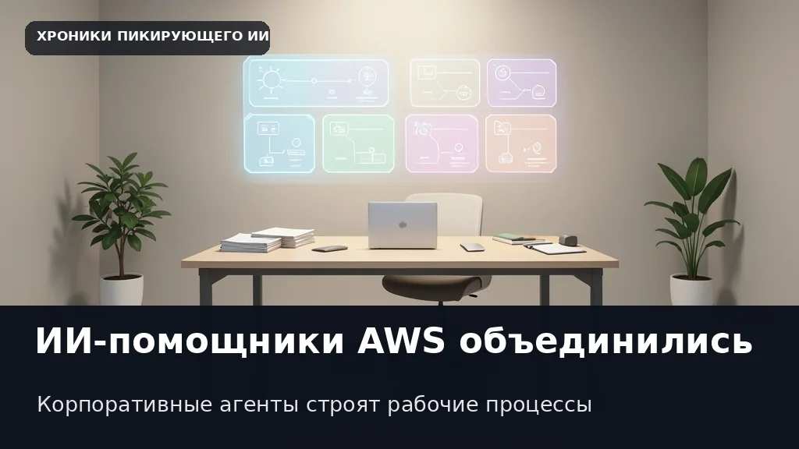

AWS научила ИИ-помощников работать в команде и собирать бизнес-процессы на ходу
Этот текст и иллюстрация созданы автоматически. В статье могут быть неточности; это не опубликованная редакционная новость.

Amazon Web Services выкатила масштабное обновление для своего корпоративного рабочего пространства AWS Quick, превратив разрозненных чат-ботов в слаженный коллектив. Главным нововведением стала многоагентная оркестровка: теперь несколько узкоспециализированных ИИ-помощников могут одновременно трудиться над одной задачей пользователя, а затем аккуратно сшивать свои находки в единый лаконичный ответ. Разработчики также добавили поддержку длинных и более сложных сценариев, способных переваривать внушительные объемы корпоративных данных.
Второй крупный фокус обновления — автоматизация рутины через интерактивные потоки. По задумке авторов, теперь любой сотрудник может объяснить ИИ свой привычный алгоритм действий обычной человеческой речью в чате. Система на лету собирает визуальную схему бизнес-процесса, которую можно тут же проверить и отредактировать. В качестве примера AWS приводит финансового менеджера, который может описать процедуру ежемесячной сверки бюджетов: ИИ сам заберет нужные цифры из дашбордов, сравнит регионы, подсветит отклонения, набросает проект отчета в Excel и даже отправит коллегам уведомление в Slack. При этом запуск готовой цепочки доступен прямо с десктопа или мобильного устройства.
Помимо коллективного разума и конструктора процессов, свежая версия обзавелась обновленным веб-интерфейсом с настраиваемой утренней сводкой, интеграцией новых источников вроде Meta Ads и Amplitude, а также расширенным языковым пакетом. Помощники научились понимать немецкий, японский, вьетнамский, а также китайский язык в двух вариантах. В Купертино и Редмонде наверняка оценят такой прагматичный подход к офисному труду, хотя живым сотрудникам пока еще придется перечитывать черновики за своими кремниевыми коллегами.
Дата объявления в RSS: 2026-11-21. Дата черновика: 2026-11-23.